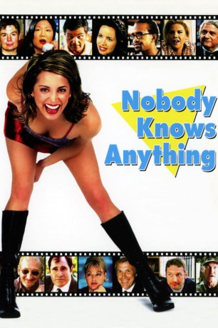

#9190 Nobody Knows Anything!
 
 IMDB-Wertung: 3.5 / 10
IMDB-Wertung: 3.5 / 10  Metascore: 0
Metascore: 0 
Eine junge, aufstrebende Filmemacherin muss in Hollywood feststellen, dass der Erfolg nicht so einfach kommt, wie sie sich das vorgestellt hat. Und schlimmer noch: Kein Schwein in Hollywood hat eine Ahnung, wie man einen erfolgreichen Film produziert. Sie hofft auf die Hilfe ihres Onkels, doch als dieser versagt muss Sarah Wilder zu anderen Mitteln greifen. Auf der Suche nach dem Erfolg in Hollywood wendet sie sich an die Reichen und die Schönen, jene, die es geschafft haben. Sie müssen das Geheimnis doch kennen. Oder stimmt das alte Sprichwort tatsächlich und niemand hat auch nur den Hauch einer Ahnung, wie man den Durchbruch schafft.
Jahr: 2003
Dauer: 84 Minuten
FSK: 12
Land: USA Studio: BCI EclipseTonspuren: DTS - ,
Untertitel:
Auflösung: 1080p (1712x1080) Größe: 8130 MB
Genre: Komödie
Regisseur: William Tannen
Drehbuch: Jorge Amado
Soundtrack:
Darsteller:
 Alan Blumenfeld als Mayor
Alan Blumenfeld als Mayor Margaret Cho als Rental Car Agent
Margaret Cho als Rental Car Agent Stephen Colbert als TV Newsman
Stephen Colbert als TV Newsman- Mike Connors als Joe Mannix
 Paul Dooley als Warden
Paul Dooley als Warden Robert Englund als Jack Sampson
Robert Englund als Jack Sampson- Charles Esten als Conner Fulton
 Pat Finn als Robber #2
Pat Finn als Robber #2 Janeane Garofalo als Patty
Janeane Garofalo als Patty Archie Hahn als Youth Leader
Archie Hahn als Youth Leader Larry Hankin als Blind Man
Larry Hankin als Blind Man Kristen Johnston als Miranda
Kristen Johnston als Miranda Richard Kind als Real Estate Agent
Richard Kind als Real Estate Agent- Bill Kirchenbauer als Jimmy's Father
 Ed Lauter als Gun Expert
Ed Lauter als Gun Expert- Jay Leggett als Prison Guard
 Michael Lerner als Uncle Lou
Michael Lerner als Uncle Lou Virginia Madsen als Prison Lawyer
Virginia Madsen als Prison Lawyer Tim Meadows als Cashier
Tim Meadows als Cashier Joel Murray als Robber #1
Joel Murray als Robber #1- Lou Myers als Blue Smoke Jones
 Mike Myers als 'Eye' Witness
Mike Myers als 'Eye' Witness David Pasquesi als Jimmy
David Pasquesi als Jimmy Mary Kay Place als Mrs. McClintock
Mary Kay Place als Mrs. McClintock- Laura Rogers als C Store Customer
- Wayne Rogers als Gun Schnook
- Mitch Rouse als Virus
- Robin Ruzan als 'Eye' Witness #2
- Scott Thompson als Mechanic
 Alanna Ubach als Sarah
Alanna Ubach als Sarah- Sophie Ward als Claire Howard
 Fred Willard als Mr. McClintock
Fred Willard als Mr. McClintock- Richard Zavaglia als Phil Phillips
- Ryan Stiles als Harold (uncredited)
 Ben Stiller als Peach Expert (uncredited)
Ben Stiller als Peach Expert (uncredited)- Linda Black als Usherette
 Carmine Caridi als Frankie C.
Carmine Caridi als Frankie C.- Peter Cohen als Peach Protestor #3
- Murphy Dunne als Psychiatrist
- Melissa Green als Young Miranda
- Sebastian Hitzig als Sarah's Cameraman
- Joe Liss als Savant
- Adam Miller als Young Jimmy
- Vladimir Nemirovsky als Film Teacher
- Dominique Pinassi als Phil's Receptionist
- Harvey Poole als Peach Protestor #1
- Susan Poole als Peach Protestor #2
- Cynthia Szigeti als Jimmy's Mother
- Olga Tannen als Usherette #1
- Holly Beavon als Receptionist's Voice
Datei: X:\2003(N-Z)\Nobody Knows Anything! (2003, FSK12, 1712x1080).mkv seit 19.07.2018
Festplatte: HD 2003-2004-2005(A-F)
 Es gibt insgesamt 46 Filme in der Gruppe '2003(N-Z)'
Es gibt insgesamt 46 Filme in der Gruppe '2003(N-Z)'